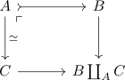

homotopy pullback of a weak equivalence and fibration of fibrant objects
Proposition
Let $(\mathcal{C}, \mathcal{W}, \mathrm{Cof}, \mathrm{Fib})$ be a model category,

a pushout consisting of cofibrant objects $A,B,C$, where $A \rightarrow B$ is a cofibration and $A \rightarrow C$ a weak equivalence
Then $B \rightarrow B \coprod_A C$ is also a weak equivalence.
Proof
hirschhornloc 13.1.2